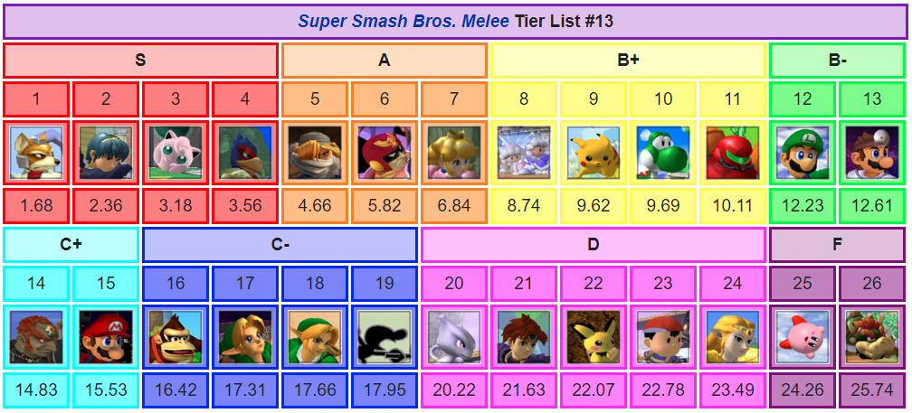

If you’re new to smash picking a character can, be the hardest part. With the large number of characters, new players are often overwhelmed as to which characters are good and which ones aren’t worth the time. Well, in this section we’ll be getting some help from the official Melee tier list (last updated March 29th 2021) to see which characters you’d want to bring to a tournament.
To keep things concise we will only be looking at the top 4 characters, as those are the most likely characters to win a tournament. That’s not to say anyone lower can’t win, 2 out of the top 10 globally ranked players play characters out of the top 7 (one playing Pikachu and the other playing Yoshi). With that said, if you’re looking to win tournaments, your best bet is to pick a character in the top 4.
Choose Your Fighter
Being the most iconic character in all of competitive Smash, Fox is widely agreed upon to be the number one character in the game, but what makes him so good. Fox is lightning fast. Not only are his arial and grounded speed at the top of the game, his overall frame data (speed at which his attacks come out and end) is second to none. His most icon move is his down-b attack, often called shine. While it was made to be a reflector, it is rarely ever used as such. This move does it all, it has a frame 1 hit box (a hitbox that comes out in 1/60 seconds) which can combo into itself, and into his KO moves, it can break him out of shield pressure, it sends opponents downwards, which is a great way to kill offstage at very low damage. In addition to all this fox has some of the best kill moves in the game. His up smash kills the heaviest opponents at just over 100% damage, and he can do a grab into up-throw, up-air which can kill many characters at 80% or less. All this combined gives him the best rush down playstyle in the entire game, giving him the ability to overwhelm any opponent he faces.
slowmotion
Despite being the best in the game, Fox is far from unbeatable. Many people agree that fox has a slightly losing matchup to Marth, the character ranked 2nd and goes even with Jigglypuff. Fox has a slight advantage over the rest of the characters in the top 7, however it far from anything to guarantee a win. Fox players will still have to work as hard as their opponent if they want to secure victory.
Wanna see him in action? check out this combo video to see some of the peak fox gameplay
A character foreign to many, Marth is the sword wielding prince originating in the fire emblem series. His sword is what makes him so powerful, using it in all of his attacks, each of his swings create a large disjointed hitbox. A hitbox being disjointed is where the hitbox is not connected to the character at all. For example, if a character swings at Marth with their foot, and Marth swings back with his sword, Marth’s sword will win because it will hit the opponent's foot, with their foot being a part of their hurt box. Another part strength of Marth’s sword, is that it does different amounts of damage and knockback depending on which part of the sword you hit with. The tip is actually the strongest part, sending opponents the furthest. However, the weak hilt can also be very useful as it can send opponents at the perfect distance to keep them in your combo.
While other characters focus on rush down and try to suffocate their opponent, Marth is the definition of elegance. Marth focuses on pressuring the opponent, restricting their movement, all until Marth gets the grab, which is guarantees a massive combo, dealing large amounts of damage and even killing. Speaking of Marth’s grab, its notorious for having the largest range in the game.
Marth has a decent matchup spread against the top 7, notably beating the best character Fox, along with Peach and Captain Falcon. Marth goes even with Falco and Jigglypuff, and loses to Sheik.
Wanna see him in action? check out this combo video to see some of the peak fox gameplay
At first glance, Jigglypuff seems like a mediocre character, her ground game leaves much to be desired, with many attacks dealing weak damage with a short range. She is also the lightest character in the game making her die very early. However, despite Puff’s shortcomings, she has some of the highest highs in the game. To compensate for her weak ground game, Jigglypuff likely has the best aerial game out of the whole cast. She has 5 mid-air jumps (as opposed to the standard one) and the fastest air speed in the game. This combination lets Puff weave in and out of the opponent's range with her best aerial attack, back-air.
With its high damage, massive range, and low lag, this move is notorious for carrying Jigglypuff’s opponents from centre stage all the way to the blast zone. This string of hits has become so infamous, it's been given the label the “Wall of Pain”.
However, back-air does not compare to Puff’s most game changing move, rest. The premise of rest is quite simple, hitting the move does massive damage and knockback, killing most characters at extremely low precents, but missing it leaves the user incapacitated for 3 seconds, effectively guaranteeing Jigglypuff’s demise. Landing a rest can be difficult due to the very small hitbox, requiring Jigglypuff to be on top of the opponent’s character to connect, but at the highest level there are many set up to combo into rest, which makes opponents have to treat Puff like a ticking time bomb that could kill them in a moment's notice.
For Jigglypuff’s matchups, Puff does not seem to lose any matchup directly, she goes even with Fox, Marth and Captain Falcon, and she beats Falco, Sheik and Peach fairly strongly making her a very well-rounded character in terms of matchups.
Wanna see her in action? check out this combo video to see some of the peak fox gameplay
At first Falco may seem like a tacked-on clone of Fox, but at high level of play, Falco’s play style is completely different from Fox’s, using more vertical combos, lockdown approaches and directional influence mind games to completely obliterate his opponents. Falco’s entire game plan revolves around his down-air. This one move has priority, speed, and ridiculous combo potential. Similar to Fox, Falco has a shine as well. While it may have a smaller hitbox, and isn't as good for edge guarding, it sends up making it even better for combos. These 2 tools make up Falco’s best combo known as the pillar combo, where Falco uses his shine to send player’s upwards and then jump up and use his down-air to send them back down only to shine them back up. His projectile, laser, is likely the best projectile in the game, it temporarily stuns its target, and it’s a completely spammable move so it can completely shut down and suffocate unexperienced players.

There are two main playstyles for Falco, safe and precise, or aggressive and rush down. Playing safe, Falco can use his laser to its full potential, restricting his opponent’s movement until he can find an opening and then capitalizing on it with a clean string of hits to optimally maximize his damage. Playing aggressive, Falco can use his high priority and frame data to stay on top of his opponent, not letting them get away going for every combo regardless of risk in order to deal as mass amounts of damage and kill as early as early as possible.
Falco has an average matchup spread, beating Peach, Captain falcon, going even with Marth, and losing to Jigglypuff, Fox sheik.
Wanna see him in action? check out this combo video to see some of the peak fox gameplay